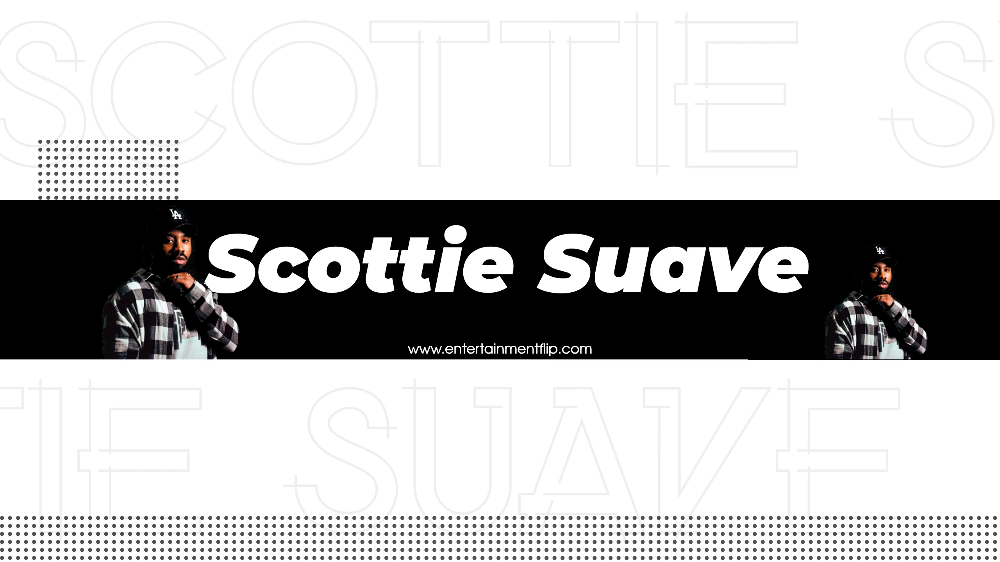

His journey into the world of music is a testament to the compelling allure of inspiration, the influence of family.
Scottie's foray into the world of music was set in motion by a simple yet transformative moment: overhearing his older brother and cousins engaging in freestyle rap sessions. The way they effortlessly wove words together to create a lyrical tapestry left an indelible impression on Scottie. This chance encounter sparked a fire within him, igniting his desire to make music. It's a story of inspiration emerging from within the family, a source of creative influence that would guide Scotties's musical journey.
In the world of music, inspiration can come from the most unexpected places. For Scottie Suave, that source of inspiration is the enigmatic Kendrick Lamar. What draws him to Kendrick's artistry is the element of mystery and surprise that surrounds the release of his work. Kendrick is known for keeping his in-process art hidden from everyone until it's ready for the world to see. This secrecy adds an air of anticipation, ensuring that fans never quite know what to expect with each new release. For Scott, this element of surprise is both thrilling and captivating.
If there's one constant in Scottie's life, it's his unbreakable bond with music. When asked what he'd be doing if he hadn't embarked on this musical journey, he found it difficult to imagine a life without it. It's a testament to his unyielding passion for the craft and a testament to the profound connection he shares with the art form. Scott's passion for music runs deep, fueled by its transformative potential. To him, music has the extraordinary power to change lives and even save them. This profound belief underscores his commitment to creating music that resonates on a personal and emotional level with his listeners. The ability to touch hearts and inspire change is a driving force in Scottie's artistic journey.
One aspect that sets Scottie apart in his creative process is his preference for solitude. Unlike many artists who thrive in the studio or with a group, Scottie finds his creative haven in his car. It's within this confined space that he feels the most free to explore his thoughts, unburdened and undistracted. This unique approach allows him to delve deep into the wellsprings of his creativity. Scott's musical inclinations aren't limited to a single genre. He confesses that he listens to R&B more often than rap, drawn to the melodious tones and harmonies that define the genre. This cross-genre appreciation informs his creative process and inspires him to infuse melodic elements into his work. One artist Scottie dreams of collaborating with is Daniel Caesar, an R&B sensation known for his soulful sound. This unorthodox pairing showcases Scottie's commitment to pushing the boundaries of his music.
His Anthem and His Best Yet to One of Scottie's standout tracks, "Growth," aptly encapsulates his current mindset. It's a reflection of his unwavering focus on personal and professional development, an anthem for progress in all aspects of life. While he considers "Growth" one of his best releases to date, he humbly acknowledges that his best music is still on the horizon. This dedication to continuous improvement is emblematic of an artist truly committed to his craft.
When Scottie envisions his future, he sees a tapestry of accomplishments that encompass a vast catalog of music and videos. These are works of art that he can proudly stand behind for a lifetime. Financial success is also on the horizon, as he anticipates a far better position for himself within the next 5-10 years. Scottie's optimism and determination to achieve these goals are a testament to his unwavering commitment to his musical journey.
Scottie's recollection of his worst performance at a Hollywood club is a testament to his ability to learn and evolve. That fateful night saw him performing his songs with vocal tracks playing throughout, drowning out the raw, live essence of his voice. It was a performance that didn't meet his standards. However, it taught him the importance of performing songs without vocal backing, allowing the true essence of his voice to shine.
A Message to His Dedicated Fans - To the ever-supportive fans who have joined him on this musical journey, Scott Suave has a heartfelt message. He urges patience, even during moments when it may seem like he's not actively working. The truth is, he's always diligently working behind the scenes, pouring his heart and soul into his art. His creative energy flourishes in solitude, allowing him to dedicate ample time to his craft. His deep appreciation for the unwavering backing from his fans radiates through every note he composes. As we conclude our exploration of the enigmatic Scottie Suave, we applaud his artistic journey, his resolute dedication to growth, and his distinctive approach to music creation. With a profound connection to his craft and a clear vision for the future, Scott is on the cusp of achieving greatness. We encourage you to keep an eye out for his forthcoming releases and continue your support for this exceptionally talented artist. And always remember, within the pages of Entertainment Flip, a treasure trove of extraordinary talents awaits your discovery."